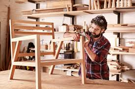

A student watched a carpenter transform a simple piece of wood into a beautiful table. What looked like ordinary wood became something useful, valuable, and attractive. That experience revealed that Woodwork is not only about cutting wood. It is about creativity, precision, design, and craftsmanship.
Woodwork is the study of woodworking materials, tools, machines, design principles, and production techniques used to create furniture, structures, and wooden products.
Many students think Woodwork is only about manual labour. In reality, modern Woodwork combines design, technology, manufacturing, business, and creativity. Many successful furniture brands started from simple woodworking skills.
This is only a small introduction. If you want to understand how programmes connect to university courses, careers, opportunities, and future success, get a copy of:
The guide designed to help students make informed decisions about their future and discover opportunities they may never have considered.